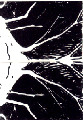

Josh
Please print this image on your local printer, making your own variations and additions with whatever materials you like, or use Photoshop, then e-mail it back as an attachment with your favorite mail program - Josh

"Here is my interpretation of the 'seed from space' that brings trees", Jenny Baker, Philadelphia, Pennsylvania, USA 2/12/04
Return to Main Page
Please send e-mail to: June Julian, jj68@nyu.edu